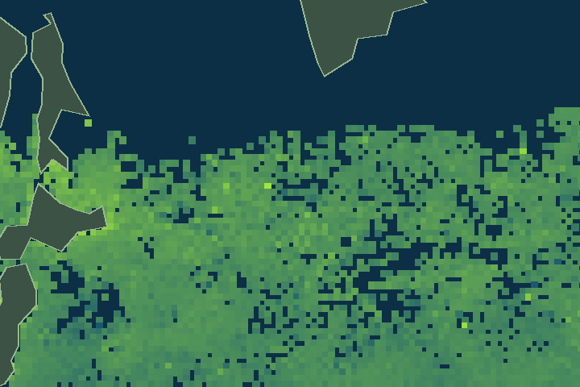

卫星如何发现海洋里的小生命？
海洋里有许多微小的浮游植物。它们会进行光合作用，也是许多海洋食物网的起点。科学家可以从卫星接收到的海水颜色信息估计一种绿色色素——叶绿素a的浓度。
动手观察：同一海域，一年怎样变化？
地点：北太平洋西部海域，约北纬42.09°、东经149.91°。这是卫星数据的一个固定网格点，不是整片海域的平均值。

NOAA VIIRS · 2024年1月地图范围：东经140°～170°、北纬35°～55°（日本以东的西北太平洋）。绿色灰色部分为陆地；深蓝色也可能表示云或卫星缺测，不能视作零值。十二张图使用相同的浓度配色。
配色按对数尺度显示，便于同时看清低浓度和高浓度地区。下面的折线图表示地图中一个固定网格点的十二个月真实月度数值。
播放后在折线图上按住左右拖动：虚线自动吸附到最近月份，上方地图同步更新。
当前月份：—
单位 mg/m³ = 每立方米海水中估算的叶绿素a毫克数。数值越大通常表示叶绿素a浓度越高，但不是卫星直接数出浮游植物数量，更不能凭它判断海水一定更健康。
猜一猜：叶绿素越多，海洋就一定越健康吗？
🌊 为什么要从太空观察这些小生命？
浮游植物为许多海洋生物提供食物，也通过光合作用参与地球的碳循环和氧气生产。卫星能帮助科学家观察它们在不同地方、不同季节的变化。
但叶绿素变化可能与季节、光照、营养盐、洋流等因素有关，过多的藻类生长有时也可能导致有害水华。科学家需要结合更多数据，才能判断海洋生态状况。
守护海洋：减少污染物和垃圾进入水体，保护海洋栖息地，支持真实的海洋监测。今天的数据告诉我们“这里的叶绿素a在变化”，并不能证明变化由某种污染造成。
📖 科学来源｜NOAA CoastWatch · NPP VIIRS · 2024年
卫星产品：NOAA CoastWatch 的 Suomi NPP VIIRS 月度叶绿素a遥感产品。单位：mg/m³。十二个月取同一格点 42.01875°N、150.01875°E。数值为卫星反演估计，可能受云、近岸光学条件及算法影响；缺测与实际零值不同。
原始请求 URL 与数据提取脚本保存在实验研究目录。图片和数字不是模拟生成的。